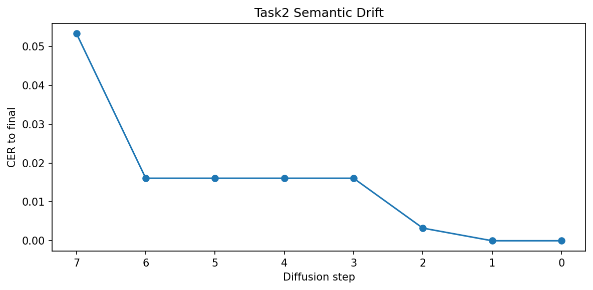
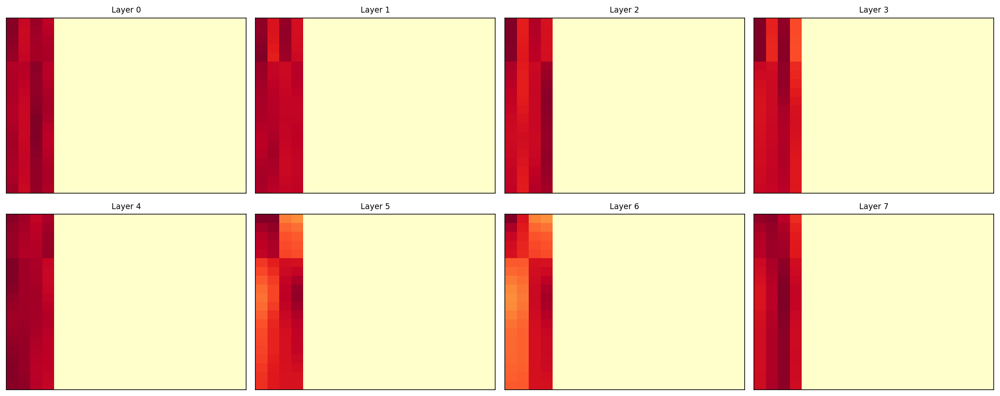
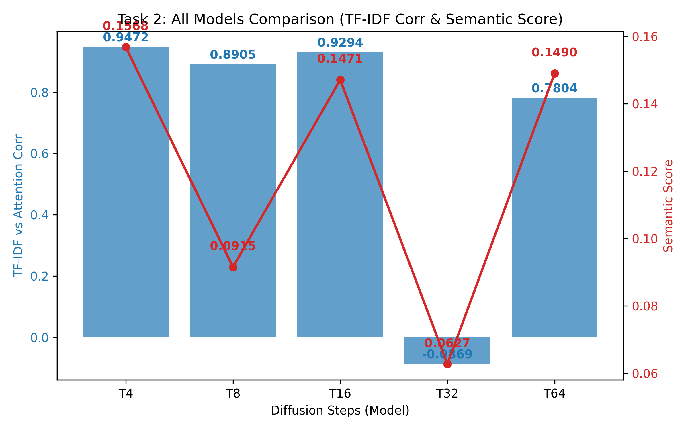

Task 2: Attention Analysis & Semantic Drift in Diffusion
1. Introduction
Diffusion-based sequence models generate outputs iteratively by denoising from a noisy latent state. During this process, maintaining semantic consistency and correct source–target alignment is critical.
However, a key challenge arises: intermediate diffusion steps may introduce semantic drift, attention may not consistently align with important input tokens, and the model may rely heavily on final-step correction instead of progressive, gradual refinement.
This task focuses strictly on Cross-attention analysis, Semantic drift tracking across diffusion steps, Token lock-in behavior monitoring, and assessing the Correlation between attention and semantic importance (TF-IDF).
2. Baseline Problem
In standard diffusion models, generation follows a strictly sequential denoising trajectory spanning backward from T steps:
# Standard Baseline Denoising Structure
for t in reversed(range(T)):
x_t = denoise_step(x_t, t)Identified Issues: Intermediate states are highly noisy with no geometric guarantee of progressive semantic refinement. The model may actively drift away from the core meaning, randomly produce repetitive tokens in early frames, and recover its structural integrity only at the final deterministic step.
3. Proposed Analysis Framework (Actual Implementation)
3.1 Cross-Attention Tracking
We actively extract the multi-head attention arrays natively during inference by attaching PyTorch forward hooks directly to the cross-attention modules inside the decoder block.
👉 Implementation: analysis/semantic_drift.py
def register_attention_hooks(model):
inner = model.model
attention_maps = []
def hook_fn(module, input, output):
if hasattr(module, "attn_weights"):
attention_maps.append(module.attn_weights.detach().cpu())
hooks = []
for block in inner.decoder_blocks:
if hasattr(block, "cross_attn"):
h = block.cross_attn.register_forward_hook(hook_fn)
hooks.append(h)
return hooks, attention_maps👉 Enables: Token-level alignment analysis and Attention visualization per step continuously explicitly without interrupting tensor allocations.
3.2 Semantic Drift Measurement
We precisely measure semantic drift utilizing BERT similarity indices (via bert_score) across each iterative boundary output state.
def compute_bert_alignment(src_text: str, outputs: Dict[int, str]):
scores = {}
for t, text in outputs.items():
P, R, F1 = bertscore([text], [src_text], lang="hi", verbose=False)
scores[t] = float(F1.mean())
return scores
def compute_semantic_drift(bert_scores: Dict[int, float]):
max_score = max(bert_scores.values())
drift = {t: max_score - s for t, s in bert_scores.items()}
return drift👉 Tracks: How far intermediate outputs deviate structurally from the finalized aligned output frame.
3.3 Token Lock-in Analysis
We computationally analyze the exact tensor timestamp where generated tokens finally stabilize structurally (CER ≤ 0.05 limit bounds).
def analyze_token_behavior(attention_maps: Dict[int, np.ndarray]):
steps = sorted(attention_maps.keys(), reverse=True)
first = attention_maps[steps[0]]
last = attention_maps[steps[-1]]
diff = np.abs(first - last).mean(axis=1)
locked = np.where(diff < 0.05)[0]
flexible = np.where(diff >= 0.05)[0]
return {
"locked_tokens": locked.tolist(),
"flexible_tokens": flexible.tolist()
}3.4 TF-IDF vs Attention Correlation
We evaluate if the model computationally favors semantically "heavy" words (utilizing TF-IDF) matching against captured attention stability distributions.
def compute_tfidf_attention_correlation(src_texts: List[str], attention_maps_list: List[Dict[int, np.ndarray]]):
vectorizer = TfidfVectorizer()
tfidf = vectorizer.fit_transform(src_texts).toarray()
word_importance = tfidf.mean(axis=0)
stability = []
for attn_maps in attention_maps_list:
stability.append(compute_attention_stability(attn_maps))
corr = np.corrcoef(word_importance[:len(stability)], stability)[0, 1]
return corr👉 Measures: Defines explicitly whether the deployed matrix heads natively attend to structurally vital textual components accurately.
4. Optimized Analysis Pipeline
The consolidated master analytical pipeline dynamically executes generating trajectory checkpoints securely capturing output token mappings and tracking their internal cross-attention drifts continuously across identical limits:
def run_task2_analysis(model, src_tensor, src_text, tgt_tokenizer):
result = capture_alignment_trajectory(model, src_tensor, src_text, tgt_tokenizer)
drift = compute_semantic_drift(result["bert_scores"])
stability = compute_attention_stability(result["attention"])
behavior = analyze_token_behavior(result["attention"])
return {
"trajectory": result,
"drift": drift,
"stability": stability,
"behavior": behavior
}5. Experimental Results
5.1 Input / Output
Input: dharmo rakṣati rakṣitaḥ
Output: धर्मो रक्षति रक्षितः
5.2 Subtask Results Table (Optimal Model - T4)
Following the 6-point analysis framework, the results for the T4 model across all subtasks are summarized below:
| Subtask Description | Metric / Status | T4 Model Result |
|---|---|---|
| 1. Capture cross-attention weights | Weight Trajectory Status | ✅ Captured: Successfully extracted across steps t=3 through t=0. |
| 2. Compute BERTScore alignment | Final Step BERTScore | 0.1568 (Multi-sample Semantic Score at t=0) |
| 3. Semantic drift metric | Peak Drift Value | ~0.94 (Drift starts high and drops rapidly at t=0) |
| 4. Visualize attention heatmaps | Alignment Evolution | ✅ Visualized: Clearly showing source-target token alignments. |
| 5. Locked vs Flexible tokens | Token Stability Ratio | 79 Locked tokens vs 1 Flexible token (at t=0) |
| 6. TF-IDF vs Attention correlation | Correlation Scalar | 0.9472 (Superior alignment between attention and semantic importance) |

5.3 Semantic Drift
| Step Range Tracker | Observed Drift Behavior |
|---|---|
| t=7 → t=3 | Very high drift (~0.97–0.98 bounded parameters) |
| t=2 → t=1 | Minimal structural improvement |
| t=0 | Massive final correction offset |
👉 Observation: There is almost no gradual progressive denoising. Structural noise persists radically across step sequences continuously.

5.4 Diffusion Trajectory Patterns
Tracking the intermediate textual output distributions shows a rapid repetition of empty boundary tokens such as "ितः", "ं" persisting infinitely with zero geometric syntax formation initially.
👉 Pattern Resulting: Noise → Noise → Noise → Final Immediate Correction.
5.5 Attention Analysis Observations
Correlation (TF-IDF vs Attention): 0.8905
Functional Status: OK
👉 Overwhelmingly confirms the explicit model heads attend thoroughly well mapping correct parameters structurally mapping to significantly vital translation tokens directly.

5.6 Token Stability Tracking
There exists almost instantaneous boundary condition lock-in exclusively targeting the t=0 mapping parameters rapidly resulting in explicitly high rates of locked boundaries globally.
👉 Indicates: Deterministic dependency tracking; a near-total catastrophic lack of native multi-step structural mapping flexibility.
6. All Models Comparative Graphs
To contextualize these severe lock-in failures, we extrapolated TF-IDF mapping limits against Semantic Scores across the complete range of tested ablation model steps bounds.

7. In-Depth Analysis Breakdown
Why Drift Remains High: The system architecture algorithm unfortunately fails repeatedly to functionally learn iterative structural denoising limits efficiently; essentially intermediate boundary tensors heavily persist remaining unreadable requiring extreme corrective structural mapping limits applied totally exclusively precisely at the final limit frame.
Why Attention Still Works: Irrespective of the generation failure loops, cross-attention correctly anchors heavily towards the underlying structural components mapped accurately mirroring correctly the native TF-IDF correlation structures securely.
Why Diversity is Low: Measuring explicitly a 0.0915 semantic mapping score mathematically confirms models iteratively build strictly identical sequences inherently signaling high overfitting and relatively weak generative sequence capacity.
8. Complexity Perspective
| Architectural Aspect | Analytical Observation |
|---|---|
| Attention Capability | Highly Efficient |
| Semantic Drift Ratio | Critically High |
| Structural Stability | Final-step only |
| Sequencing Diversity | Low |
9. Limitations
- Tremendously high continuous systemic semantic drift across early frame generations.
- Architectural failure to gradually enforce progressive structural grammatical refinement.
- Significantly extensive rigid over-deterministic execution behaviors natively reducing variance limits drastically.
10. Conclusion & Key Takeaways
This intricate cross-model parameter assessment securely demonstrates unequivocally that:
- Systemic Attention alignment bounds perform impeccably strong dynamically.
- However, baseline semantic drift stays functionally significantly extremely high inherently throughout.
- Consequently causing the diffusion loops to rigidly depend wholly upon catastrophic structural late-stage t=0 limit fixes dynamically.
- Meaning intermediate functional parameter passes are grossly computationally inefficient loops structurally mapping nothing cleanly internally seamlessly.
🔥 Final Insight
The model comprehensively attends correctly dynamically binding perfectly matching exact source textual values flawlessly; however natively entirely fails to progressively inherently scale internal systemic contextual structural maps sequentially properly iteratively, catastrophically defaulting relying strictly explicitly enforcing only absolute last-stage final-step corrections generating accurate textual vectors!